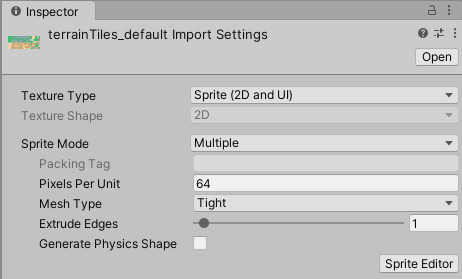
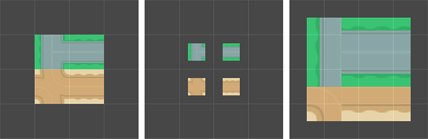
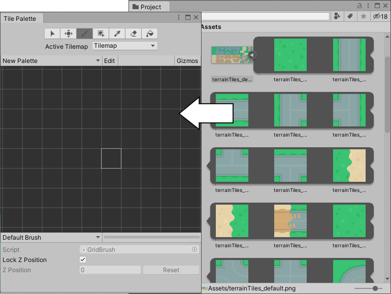
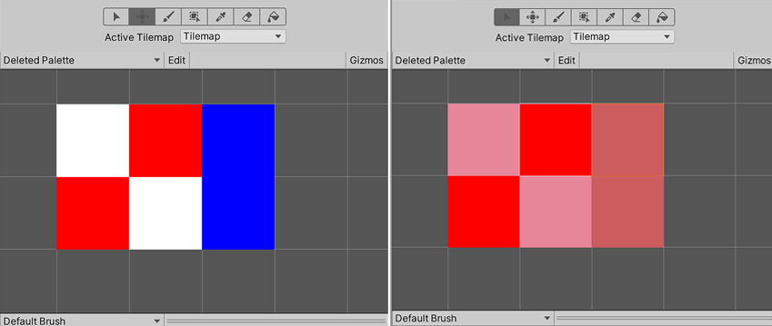

Creating Tiles
There are two ways to create a Tile Asset in Unity; the first method is to directly create a Tile Asset from the Assets menu. The second method is to automatically generate Tile Assets from a selection of SpritesA 2D graphic objects. If you are used to working in 3D, Sprites are essentially just standard textures but there are special techniques for combining and managing sprite textures for efficiency and convenience during development. More info
See in Glossary.
Importing and preparing Sprites for Tile Assets
Import the individual Tiles or Tileset images for your TilemapA GameObject that allows you to quickly create 2D levels using tiles and a grid overlay. More info
See in Glossary into your Unity Project by placing the Textures into the Assets folder. Select the imported images to view their Texture Importer settings in the InspectorA Unity window that displays information about the currently selected GameObject, asset or project settings, allowing you to inspect and edit the values. More info
See in Glossary window.

Sprite Importer settings.
When importing Sprites for use in a Tilemap, use the following recommended settings. For further information about each setting, refer to the documentation on Texture Type: Sprite (2D and UI).
- Texture Type - Set this to Sprite (2D and UI). Other Texture types are not supported for Tilemaps.
-
Sprite Mode - Set this to Single if the Texture contains only a single Sprite. Set to Multiple if it contains multiple elements, for example a Tile sheet that contains multiple Tile Textures.

Set Sprite Mode to Multiple when importing a Sprite sheet. -
Pixels Per Unit (PPU) - This value is the number of pixels that make up one Unity unit for the selected Sprite. This determines the size of the Tile Sprite when it is rendered on the Tilemap. It is recommended to set this value to the width(in pixels) of a single Tile Sprite so that a Tile is equal to one Unity unit in width. For both Hexagonal and Isometric Tiles, measure the width of the Sprites at their widest. The size of the Tile Sprites are also affected by the Cell Size property of the Grid parent of the Tilemap also affects the size of Tile Sprites as the Cell Size determines how many Unity units equal to a single Cell.
In the example below, the imported Sprites are 64x64. The default Tilemap has a Cell Size of (XYZ: 1, 1, 0) Unity units. To make a Tile Sprite fit exactly on a single Cell of the Tilemap, set its PPU value to 64 to match its pixel width. The Sprite’s entire width then corresponds to one Unity unit, which is equal to the width (X value: 1) of a single Cell on the Tilemap.

Left: Sprites set to 64 PPU. Middle: Same Sprites set to 128 PPU. Right: Sprites set to 32 PPU.
By doubling the original PPU value of 64 to 128, the Sprite scales to 0.5(64px/128) Unity units in width. Halving the PPU value to 32 instead scales the Sprites to 2(64px/32) Unity units in width. The Sprites appear smaller or bigger respectively, however their Cell position on the Tilemap remains unchanged. - Sprite Editor Outlines - After the Sprites are imported, refine the outlines of the Sprites by opening each of them in the Sprite Editor and editing their outlines. If the Texture is imported with Sprite Mode set to Multiple and contains multiple Sprites, then edit the outline of each of the Sprites in the editor.
Generating Tile Assets automatically in the Tile Palette
Tiles can be automatically generated by bringing the individual Sprites or Sprite sheets of the Tiles directly into the Tile Palette window (if the window is not open, go to Window > 2D > Tile Palette).
First prepare and import the Tile Sprites, then open the ‘New Palette’ drop-down menu in the Tile Palette window. Select an existing Tile Palette from the list, or select ‘Create New Palette’ to open the Create New Palette dialog box.

The New Palette drop-down menu.
After selecting the properties of the Tile Palette (refer to the Tile Palettes documentation for more information about the different options), select Create to open the new Palette in the window.

Select ‘Create’ to create a new Tile Palette.
After creating or loading a Palette, drag and drop Textures or Sprites from the Assets folder directly onto the Tile Palette window. You will be prompted for the save location for the new Tile Assets. Select the save location, and the new Tile Assets are generated in the selected folder. The generated Tiles are also automatically placed onto the Palette.

Tile Asset credit to Kenney
Deleting Tile Assets
When you delete Tile Assets, they are replaced by placeholder Tiles made of a white square tinted with various shades of pink. The placeholder Tiles are placed on the Tilemaps in the original positions of the deleted Tile Assets.This helps to identify Tile Assets which have been deleted in a project, whether intentionally or accidentally.
Each deleted Tile Asset has a corresponding placeholder Tile with a unique shade of pink that differentiates the placeholders from each other. You can replace these placeholder Tiles with another Tile by using the Flood Fill tool or remove them.

Left: Tile Palette with three different colored Tile Assets (named after their respective colors - White, Red and Blue). Right: Tile Palette after deleting the the White and Blue Tile Assets. The Red Tile Asset has not been deleted.